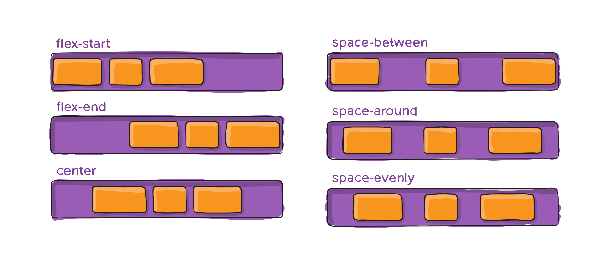

flex
Свойства контейнера
Flex-контейнер (дальше просто контейнер) это родитель группы элементов, которым необходимо изменить порядок расположения. Именно свойства контейнера контролируют направление осей, многострочность и позиционирование элементов в строке.

Свойство display
display: flex | inline-flex
Создаёт
flex-контейнер, блочный или строчно-блочный, в зависимости от
заданного значения, и устанавливает flex-контекст для всех
детей (не потомков) контейнера, превращая их во flex-элементы.
- 1
- 2
- 3
- 4
Свойство justify-content
Управляет позиционированием элементов на главной оси, от
main-start
до main-end.
justify-content: flex-start | flex-end | center | space-between | space-around | space-evenly
- flex-start - элементы прижимаются к старту оси. Это значение по умолчанию.
- flex-end - элементы прижимаются к концу оси.
- center - элементы центрируются на оси.
- space-between - элементы равномерно распределяются на главной оси. Первый элемент устанавливается в начало оси, а последний в конец.
- space-around - элементы распределяются равномерно, но левый и правый элемент отстают от границ контейнера на половину зазора между остальными элементами.
- space-evenly - элементы распределяются так, что расстояние между элементами, и от крайних элементов до границ контейнера одинаковое. 
- 1
- 2
- 3
- 4
У этого свойства есть и другие значения, но они не поддерживаются
многими браузерами или работают нестабильно между разными браузерами.
Самые часто используемые значения, в том числе значение по умолчанию,
приведены в примере. Они включают в себя сдвиг контента вправо
(flex-end), центрирование (center) и равномерное распределение
пространства между элементами (space-between).
Свойство align-items
Управляет расположением элементов вдоль поперечной оси. Это аналог justify-content для главной оси.
align-items: stretch | flex-start | flex-end | center | baseline
- flex-start - элементы прижимаются к старту оси.
- flex-end - элементы прижимаются к концу оси.
- center - элементы центрирутся на оси.
- baseline - элементы вырвниваются по базовой линии их текстового содержимого.
- stretch - элементы растягиваются на всю длину оси. Это значение по умолчанию.
- 1
- 2
- 3
- 4

У этого свойства есть и другие значения, но они не поддерживаются
многими браузерами или работают нестабильно между разными браузерами.
Наверное самое частое применение - это вертикальное центрирование
элементов в строке, особенно если элементы разной высоты. Добавим к
нашей разметке шапку с логотипом и вложим меню в шапку так, чтобы
логотип и меню были соседями.
Свойство flex-direction
Flexbox это система расположения элементов в одном определённом направлении - горизонтально или вертикально. Свойство flex-direction устанавливает направление главной оси, определяя направление элементов в контейнере.
- row - ось начинается слева и заканчивается справа. Это значение по умолчанию.
- row-reverse - ось начинается справа и заканчивается слева.
- column - главная ось становится вертикально, начало сверху и конец снизу.
- column-reverse - главная ось становится вертикально, начало снизу и конец сверху.

- 1
- 2
- 3
- 4
По умолчанию для flex-direction установлено значение row , поэтому элементы верхнего меню начинают выстраиваться слева направо. Для нижнего меню задано значение row-reverse, главная ось развернулась на 180 градусов и элементы выстраиваются справа налево.
Свойство order
По умолчанию элементы располагаются в том порядке, в котором они
указаны в HTML-файле. Используя свойство order можно визуально
изменить порядок расположения элементов вдоль главной оси. При этом, в
HTML-коде ничего не поменяется.
Это свойство применяется не часто, из-за того, что нарушает связь
между визуальным порядком элементов и тем, как их видит браузер и
ассистивные технологии.

-
Иногда изменения порядка отображения элементов в контейнере
недостаточно.
В таких случаях мы можем применить свойство order для конкретных элементов. -
По умолчанию, значение этого свойства у элементов равно 0, но мы
можем задать положительное или отрицательное
целое число этому свойству. - 0 - по умолчанию
- 1 - конец списка
- -1 - начало списка
- 1
- 2
- 3
- 4
Свойство flex-wrap
По умолчанию создаётся однострочный контейнер и элементы размещаются на одной строке, сжимаясь по необходимости. Свойство flex-wrap позвоялет превратить однострочный контейнер в многострочный. Элементы будут добавляться в строку до тех пор, пока в ней будет место, после чего будет автоматически создана еще одна строка.

flex-wrap: nowrap | wrap | wrap-reverse
- Cплющило на одном ряду лилий. Раздвинь их с помощью свойства flex-wrap , которое принимает следующие значения:
- nowrap - все элементы будут на одной строке. Это значение по умолчанию.
- wrap - разрешает элементам перепрыгивать на другие строки, которые по умолчанию располагаются сверху вниз (вдоль поперечной оси).
- wrap-reverse - разрешает элементам перепрыгивать на другие строки, которые располагаются снизу вверх (вдоль поперечной оси).
- 1
- 2
- 3
- 4
- 5
- 6
- 7
- 8
- 9
- 10
- 11
- 12
- 13
- 14
- 15
- 16
Далее используем flex-свойство контейнера gap, которое определяет
зазор между столбцами и строками сетки. Пусть в нашем предполагаемом
макете это 20px.
Свойство gap комбинирует в себе значение свойств row-gap и
column-gap , которые позволяют отдельно указать размеры зазоров
между строками и столбцами сетки. Используйте gap когда зазоры
одинаковые, в противном случае подойдут row-gap и
column-gap.
Свойство align-content
Управляет выравниванием всех строк многострочного контейнера вдоль поперечной оси, если есть свободное место. Аналогично тому, как justify-content выравнивает элементы в каждой строке. Это свойство не действует, когда есть только одна строка элементов или в контейнере нет свободного места по вертикали (явно не задана высота больше чем контент).
align-content: flex-start | flex-end | center | space-between | space-around | space-evenly | stretch
- stretch - строки равномерно растягиваются чтобы занять всё место. Значение по умолчанию.
- flex-start - строки прижимаются к старту оси.
- flex-end - строки прижимаются к концу оси.
- center - строки центрируются на оси.
Значения space-between, space-around и space-evenly работают аналогично свойству justify-content, только для строк, и используются редко.

- 1
- 2
- 3
- 4
- 5
- 6
- 7
- 8
- 9
- 10
- 11
- 12
- 13
- 14
- 15
- 16
- 17
- 18
- 19
- 20
- 21
- 22
- 23
- 24
- 25
- 26
- 27
- 28
- 29
- 30
- 31
- 32
Свойства элемента
Flex-элементы - это дети flex-контейнера, элементы первого уровня вложенности. Flex-элементы (дальше просто элементы) перестают подчиняться стандартному потоку документа, теряют свой тип (блочный, строчный и т. п.) и следуют правилам позиционированая Flexbox-модели .
Свойство flex-basis
Определяет начальный размер элемента перед распределением свободного пространства. Значением может быть любая валидная величина: пиксели, проценты, rem и т. д. Для flex-элементов это замена свойства width , но с некоторыми особенностями. В примерах этого занятия для всех flex-элементов задавался именно flex-basis , а не width .
flex-basis: auto | значение
- Если указаны оба свойства, flex-basis и width , то свойство width игнорируется.
- Свойство flex-basis это не финальный размер элемента, а размер до распределения свободного пространства.
- Свойства min-width и max-width работют как ограничители размера элемента даже если у него указан flex-basis, а не width .
- Свойство flex-basis может определять высоту, а не ширину элемента. Это происходит в случае когда главная ось идёт вертикально.
Свойство flex-grow
Определяет способность элемента, по необходимости, занимать больше места (расти), чем его начальный размер. Значение задаётся как пропорция (доля) свободного места в контейнере.
flex-grow: доля
По умолчанию у всех элементов установлено значение 0, то есть элементы
не пытаются занять дополнительное свободное место, даже если такое
есть. Отрицательные значения задавать нельзя.

Например, если у всех элементов установлено одинаковое значение этого свойства, то они займут равное количество места в контейнере. А вот если всем задать значение 1, а одному элементу 2, то он попытается занять в два раза больше места, чем любой другой элемент.
- 1
- 2
- 3
- 4
- 5
- 6
- 7
- 8
- 9
- 10
- 11
- 12
- 13
Свойство flex-shrink
Определяет способность элемента по необходимости занимать меньше места
(сжиматься), чем его начальный размер. Значение задаётся как пропорция
(доля).
flex-shrink: доля
По умолчанию у всех элементов установлено значение 1, то есть элементы
будут сжиматься при необходимости. Отрицательные значения задавать
нельзя. Используется довольно редко.
Свойство align-self
Позволяет элементу изменить своё положение на поперечной оси,
переопределив для себя значение свойства align-items от
контейнера. Аналога для главной оси не существует, элемент может
сместить себя только на поперечной оси.
align-self: auto | flex-start | flex-end | center | baseline |
stretch

Вернёмся к примеру карточки с изображением и контентом. Для решения проблемы вертикального растягивания картинки мы использовали свойство align-items у контейнера. Свойство align-self позволяет решить эту проблему более точечно, переопределив значение align-items только для изображения.
- 1
- 2
- 3
- 4
- 5
- 6
- 7
- 8
- 9
- 10
- 11
- 12
- 13